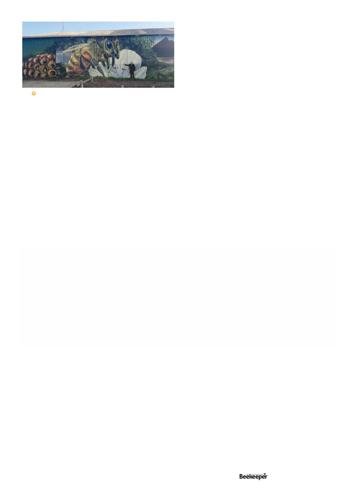

sources of queens in NSW.
Other major topics of discussion were continued access to
logging roads, which are very important to them to access
leatherwood forests, and promotion of leatherwood itself.
The TBA has contracted a marketing consultant to help
draft a major promotional campaign to bring their unique
leatherwood honey to the attention of foreign markets.
Here I first learned that though bees suffering from
Deformed Wing Virus have not been detected here in
Australia, which has important ramifications for Varroa, it
has been detected in honey. But what isn’t proven is whether
the virus found in the honey was still “alive” and could be
transmitted to bees. The really big ramification for this is, if
proven it would be a very compelling reason to ban foreign
honey imports, which there was great interest in at all three
conferences I attended. I’m hoping to have an article about
DWV for next month because this is an extremely intriguing
topic.
TBA also formally voted motions to AHBIC to ban honey
imports unless it is proven it doesn’t have DWV and meets
Australian quality standards.
Jon Lockwood from AHBIC presented about the activities
of the AHBIC subcommittee on honey imports, which is
famously “multi-pronged.” As Jon explained, our hands
are relatively tied up by free trade agreements designed to
make it very difficult to throw up any obstacles to imports,
but they’re investigating “anti dumping” (the selling here of
honey for a lower price than in its home country), and more
significant testing of honey imports (only 5% of incoming
honey is currently tested, they want to increase this to at least
10%), among other things. (all the conferences received this
multi pronged presentation).
Another particularly interesting presentation, Hobart area
beekeeper Anita Long has organised a very good Tasmanian
Junior Beekeepers program teaching kids about beekeeping
in a very practical manner actually working with hives and
extraction, etc. Two of their students actually travelled to the
International Meeting of Young Beekeepers in Slovenia and
one of them Reuben Wherrett (16) even won silver! I am also
hoping for a future article about this very interesting topic.
Lindsay Bourke was re-elected as TBA president for the
13th year in a row. I was able to sit down with this amiable
and fascinating man for an interview that resulted in ten
pages of notes and a hand cramp but look for some articles
about notable Australian beekeepers in the coming months.
In general the Tasmanians have had a decent year with
what they call “brown top gum” (Eucalyptus obliqua, what
we call messmate in Victoria) and the usual leatherwood.
One correction I need to make from last month. In a
news item I had said they use bumble bees for pollination
in Tasmania – I was surprised to learn that while they do
have a thoroughly established bumble bee population and
they are generally considered the best pollinators of some
greenhouse crops, it is not actually permitted to use them
for pollination in Tasmania.
Like all conferences this one ended with an awards dinner.
There were various categories of award but the preeminence
of leatherwood among the Tasmanians was made clear by
the fact that the leatherwood honey award was clearly
the most coveted prize, being a very large awards cup
with names of past winners engraved on it. Also, mead, a
sometimes obscure category in other jurisdictions was the
one other award with a physical trophy.
Victoria - Tuesday June 4th - Thursday June 6th
The Victorian Apiarist Association (VAA) conference this
year was held in Wonthaggi, not far from Wilson’s Prom in
Victoria’s south-east. It seemed about it’s usual size, with 125
attendees and six to eight exhibitors lining the sides of the
venue (Wonthaggi Working Man’s Club). There are 11,075
registered beekeepers in Victoria with 131,386 registered
bee hives. In years past I’ve felt the annual VAA conference
was dominated by commercial beekeepers but this time
I had the feeling most of those in attendance were more
miscellaneous, sideliners and serious hobbyists, though still
with a definite presence of commercial beekeepers as well.
This may have been due to the distance from the heartland
of Victorian commercial beekeeping in the Ballarat-Bendigo
triangle (VAA also rotates around its meeting locations).
The general feel of the room at the VAA conference
was much more that Varroa is an immediate concern that
everyone needs to learn how to manage immediately.
There is a more-or-less pervasive feeling that it will be in the
Victorian side of the almonds this September and spreading
in Victoria from there. It seems there are no plans to have
any containment zones within Victoria.
Many of the VAA speakers were experts with experience
in aspects of Varroa, joining us by video from New Zealand
or the United States. This gave attendees some excellent
perspectives from experts who have been dealing directly
with Varroa for many years. One thing they all mentioned
and I don’t think can be mentioned too much is rotate-rotate-
rotate treatments to prevent mites building up resistance. It’s
easy to find one treatment you know how to use and like
but it’s really imperative to rotate treatments (by mode of
action!). In addition many the industry updates I mentioned
at Tasmania were also given here.
It was mentioned that there’s expected to be 70,000
hectares in almonds in the next 3 years.
I love putting actual numbers to things so numbers can be
crunched. One of the NZ presenters mentioned that previous
to Varroa 1 beekeeper could manage about 800 hives, but
because of the added labour of mite treatment it now takes
one person per 400 hives, and costs about $55 per hive
to treat for varroa, so keep figures on that scale in mind
for your future business planning (and on that note AgVic
and I’m sure the other states are running business resilience
workshops exactly to help beekeepers plan for these wild
changes to their business environment).
One anticipated event was the announcement of the 12
Varroa Development Officers (VDOs). It not being announced
until the end, even the VDOs only having suspicions who
Lindsay Bourke in front of the beautiful mural on his
Launceston depot.
Vol. 126 | No. 01 |
Celebrating 125 years | 21